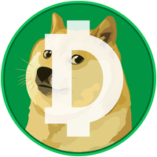

Identify the network.
DOG uses the BEP-20 token standard on BNB Smart Chain.

dogecoincashTHE DOG TOKEN Explore DOGDOGECOIN CASH · $DOG
Explore Dogecoin Cash (DOG), a BEP-20 token on BNB Smart Chain. Find its contract address and independent blockchain and exchange resources.
ON BNB SMART CHAIN · BEP-20 TOKEN
ABOUT DOG
Dogecoin Cash is identified by its DOG symbol and its contract on BNB Smart Chain.
This informational website brings together the network, contract address, blockchain explorer, and third-party exchange resources. Identify the token by its full contract address, rather than its name or symbol alone.
View token detailsDOG uses the BEP-20 token standard on BNB Smart Chain.
Compare the full contract address with the token shown in your wallet or on an exchange.
Use BscScan to inspect available on-chain information about the token.
MEET THE TOKEN
The details that identify Dogecoin Cash on BNB Smart Chain, all in one place.
Explore on BscScan0x9596a56c73CA6f50CBd05cB8D85865F75659dC78Match the entire address before importing or swapping.
YOUR FIRST STEPS
Explore DOG through PancakeSwap.
Take a moment to check each step.
Use a wallet that supports BNB Smart Chain. Select that network and keep BNB available for network fees.
Wallet guide ↗Open PancakeSwap on BNB Smart Chain and check DOG’s full contract address against the one above.
Check the available route, price impact, fees, and minimum received. Any wallet approval or swap happens on PancakeSwap.
Open PancakeSwap ↗Availability and liquidity can change. This website does not connect to your wallet or execute trades. Keep your recovery phrase private.
TAKE A CLOSER LOOK
Start with the token itself.
Then explore how the tools work.
Inspect the token address and on-chain information through BscScan.
BscScanPancakeSwap’s own guide to connecting a wallet and reviewing a trade.
PancakeSwap documentationOpen the token-specific swap page and review the contract, route, and available liquidity.
PancakeSwapGOOD QUESTIONS
Dogecoin Cash is the DOG token identified by the BNB Smart Chain contract shown on this page. Its token standard is BEP-20.
No. DOG is a BEP-20 token on BNB Smart Chain. Dogecoin (DOGE) is a different asset on its own blockchain. Check the network and full contract address when using DOG.
No. The network a token uses does not establish a listing on the Binance centralized exchange. The trading link on this page opens the decentralized exchange PancakeSwap.
Use the BscScan token page linked above to inspect available supply, holder, and transfer information. This site does not publish an unverified supply or market-cap figure.
No. This is an informational resource. It does not present itself as the token developer or operator, administer the token contract, connect to wallets, or process transactions. BscScan and PancakeSwap are independent services.
STAY CURIOUS.